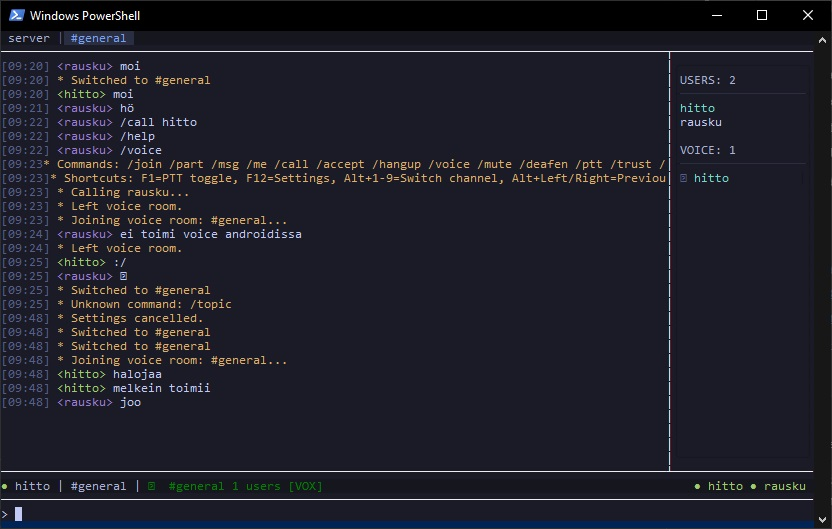
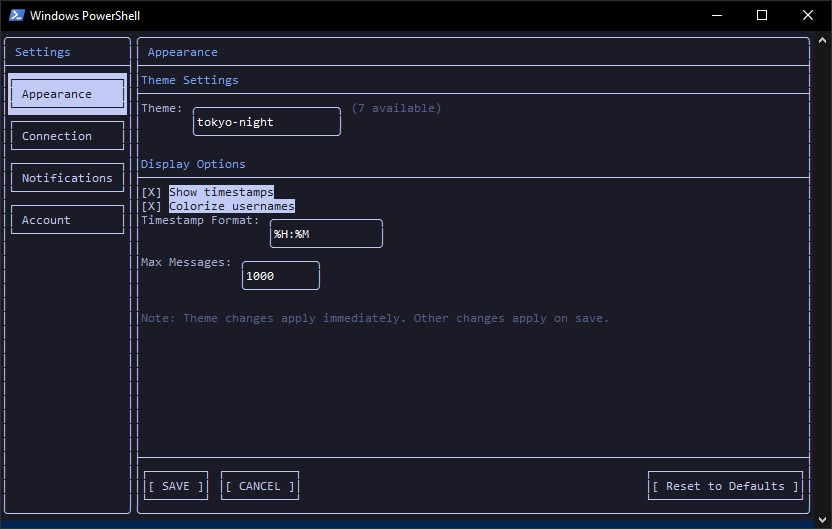
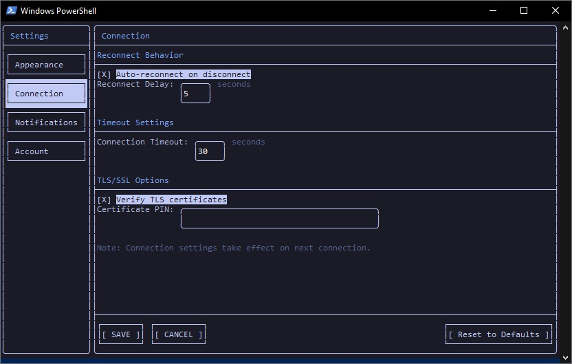
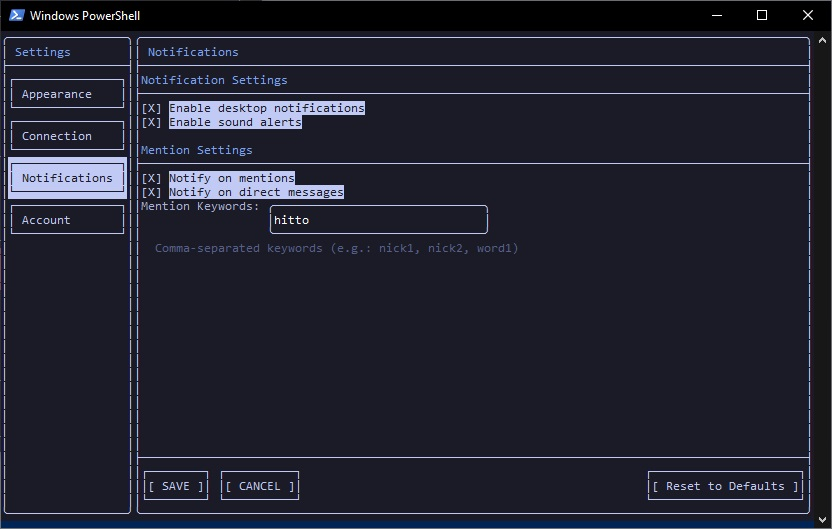
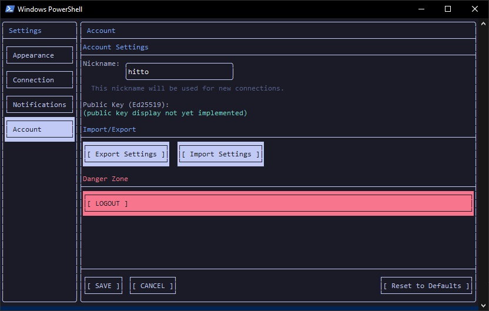

Desktop Client
A terminal-based chat client built with FTXUI. Lightweight, fast, and fully encrypted.
Overview
The IRCord desktop client is a modern C++20 terminal user interface (TUI) application powered by FTXUI. It runs natively on Windows (x64) and Linux (x64), with no Electron, no browser engine, and no unnecessary overhead.
All messages are end-to-end encrypted using the Signal Protocol. The server never sees plaintext. Your identity keys are generated and stored locally — they never leave your device.
Core features include:
- Channels — group conversations with Sender Key encryption
- Direct messages — private 1-on-1 chats with full forward secrecy
- Voice rooms — push-to-talk and voice-activated audio
- File transfer — encrypted peer-to-peer file sharing
- Message search — search through your local message history

The main chat interface — channel tabs at the top, messages in the center, user list on the right, and input at the bottom.
Installation
Windows
Download the latest release archive, extract it, and run the executable.
# Extract the release archive
Expand-Archive ircord-client-win-x64.zip -DestinationPath C:\ircord
# Run the client
C:\ircord\ircord-client.exeLinux
Download the tarball, extract it, make it executable, and run.
# Extract
tar xzf ircord-client-linux-x64.tar.gz
# Make executable
chmod +x ircord-client/ircord-client
# Run
./ircord-client/ircord-clientFirst Connection
When you launch the client for the first time, you will be guided through the connection and authentication process step by step.
- Launch the client from your terminal.
- Enter the server address when prompted (e.g.,
ircord.example.com). - Register or log in. New users create an account; returning users authenticate with their existing credentials.
$ ./ircord-client
IRCord Desktop Client v0.15
Server address: ircord.example.com
Port [6697]:
Connecting to ircord.example.com:6697 (TLS 1.3)...
Connected.
Username: alice
Password: ********
Generating Ed25519 identity key...
Uploading public keys...
Authenticated as alice. Welcome to IRCord.During registration, an Ed25519 identity key pair is generated on your machine. The public key is uploaded to the server so other users can establish encrypted sessions with you. The private key is stored locally and is never transmitted.
Using Channels
Channels are group conversations, similar to IRC channels. All channel names begin with
#.
/join #general Join a channel
/part #general Leave a channelJoined channels appear in the sidebar on the left. You can switch between channels by clicking the channel tab or by using keyboard shortcuts. The active channel is highlighted.
Channel messages are end-to-end encrypted using Sender Keys. When you first send a message in a channel, a Sender Key Distribution Message (SKDM) is broadcast so that other participants can decrypt your messages. This happens automatically — no manual key management is required.
Direct Messages
Direct messages (DMs) provide private, one-on-one conversations with another user.
/msg bob Hey, are you around?When you send a DM for the first time, the client performs an X3DH key exchange (Extended Triple Diffie-Hellman) using the Signal Protocol. This establishes a shared session with the recipient. From that point forward, every message uses a new encryption key derived via the Double Ratchet algorithm, providing forward secrecy — even if a key is compromised, past messages remain protected.
Voice Rooms
Voice rooms let you have real-time audio conversations within a channel.
/voice join #general Join the voice room for #general
/voice leave Leave the current voice roomVoice supports two input modes:
- Push-to-Talk (PTT) — hold a configured key to transmit audio.
- Voice Activation (VOX) — audio is transmitted automatically when you speak above the threshold.
While in a voice room, you can mute your microphone or deafen (mute all incoming audio). The user list displays speaking indicators next to participants who are currently transmitting. The status bar at the bottom of the interface shows your current voice state, including the room name and mute/deafen status.

Voice room active — the status bar shows the room name, user count, and current voice mode (VOX).
Keyboard Shortcuts
The client is designed for efficient keyboard-driven navigation.
| Key | Action |
|---|---|
| F1 | Toggle Push-to-Talk (PTT) |
| F12 | Open Settings |
| Alt+1–9 | Switch to channel 1–9 |
| Alt+Left / Right | Switch to previous / next channel |
| Enter | Send the current message |
| Up / Down | Scroll through input history |
| Page Up / Page Down | Scroll messages in the chat view |
| Ctrl+L | Clear the chat view |
| Ctrl+U | Clear the input line |
| Ctrl+Q | Quit the client |
Mouse Controls
In addition to keyboard navigation, the client supports mouse interaction for common tasks.
| Action | Effect |
|---|---|
| Click channel tab | Switch to that channel |
| Click user list item | Insert a mention for that user |
| Right-click | Open context menu |
| Drag user list edge | Resize the user list panel |
| Mouse wheel | Scroll messages (3 lines per tick) |
| Double-click message | Select the message text |
| Triple-click message | Select message with sender name and auto-copy to clipboard |
Configuration
The client reads its configuration from a TOML file. The file is created automatically on first launch with sensible defaults.
| Platform | Config file location |
|---|---|
| Linux | ~/.config/ircord/config.toml |
| Windows | %APPDATA%\ircord\config.toml |
Key Settings
| Setting | Description | Default |
|---|---|---|
server |
Server hostname or IP address | "" |
port |
Server port number | 6697 |
username |
Your username for authentication | "" |
theme |
Color theme ("dark" or "light") |
"dark" |
user_list_width |
Width of the user list panel in columns | 20 |
Example Configuration
# IRCord Desktop Client Configuration
server = "ircord.example.com"
port = 6697
username = "alice"
# Appearance
theme = "dark"
user_list_width = 24Settings UI
Press F12 to open the built-in settings panel. It provides a graphical interface for all configuration options, organized into four tabs.

Appearance
Choose from 7 color themes (including tokyo-night), toggle timestamps and username colors, set timestamp format and message buffer size.

Connection
Configure auto-reconnect behavior, connection timeout, TLS certificate verification, and certificate pinning.

Notifications
Enable desktop notifications and sound alerts, configure mention detection with custom keywords.

Account
Change your nickname, view your Ed25519 public key, import/export settings, or log out.